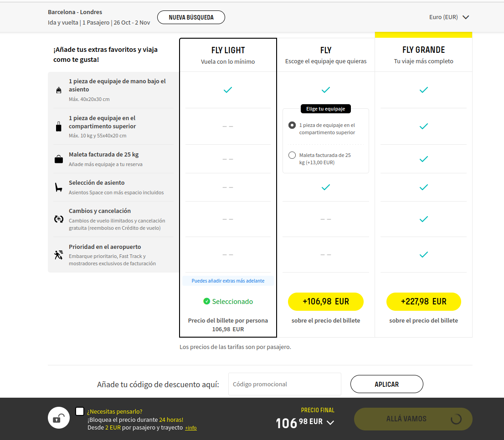
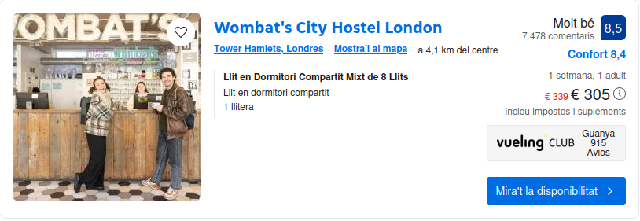
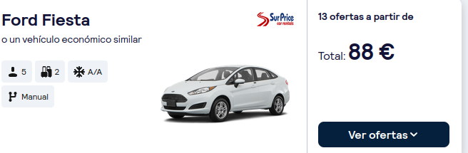
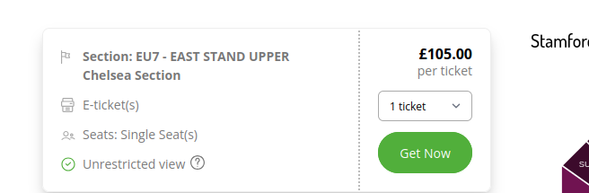
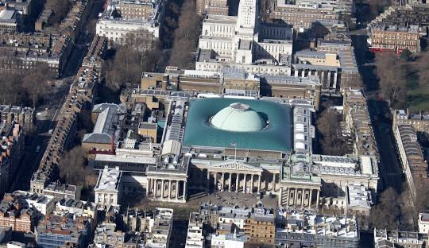

Viaje a Londres + Instalación en el hotel
 Alquilare un coche para la semana completa
Por la tarde, visitare la Torre de Londres y la Catedral de San Pablo


Por la mañana descansare, ya que por la tarde (14pm) asistire a ver el Chelsea vs Newcastle en Stamford Bridge

Despues del partido, ire a visitar el Hyde Park (sobre las 18pm)

Por la mañana visitare el Museo Britanico
Por la tarde visitare Palacio de Kensington y el Ojo de Londres


La ruta del dia entero
La mañana sera de descanso
Por la tarde visitare el famosisimo Big Ben

Por la mañana visitare el Museo de Historia Natural

Por la tarde visitare el Palacio de Buckingham

Por la mañana realizare el tour del Chelsea en el Stamford Bridge

Por la tarde realizare el tour opuesto al anterior, el del Arsenal en el Emirates Stadium

Al ser el ultimo dia, es un dia de descanso y de realizar lo que me apetezca
Por la tarde, devolvere el coche alquilado e ire al aeropuerto para coger el vuelo de vuelta a casa